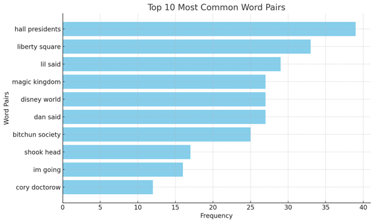

For this week’s exercise, I switched over to ChatGPT rather than Copilot, as I ran into unknown issues with Copilot. As in, I couldn’t even get started. ChatGPT also put up a headache, but I managed to get it figured out. The book I chose was Cory Doctorow’s Down and Out in the Magic Kingdom, available on Project Gutenberg because Doctorow holds incredibly progressive values toward publishing and access. I chose it because I own it, read it at the start of this year, and remembered all the venues he’d made it available. Lastly, I ended up using Voyant Tools to cross-reference some of ChatGPT’s output after I started questioning some of the output. More on that in a moment.
I started off following the prompts in the exercise. Rather than focusing on conversation as in the prior two weeks, I was far more interested in what data was provided to me, so after sending along the initial “I’d like to do some distant reading analysis of a novel. Can you help me through the process?” and seeing a mountain of options, I moved onto the second prompt of just attaching the file and asking it to preprocess it. Here’s where the first issue occurred, unbeknownst to me until a few prompts later. It was requested that we leave the metadata in, which I did. Being a more modern text, and I even believe possibly manually added to Project Gutenberg by Doctorow himself, this version of Down and Out maintains the blurbs and even licensing information unique to Doctorow’s releases. ChatGPT poorly handled removing this, leading to some interesting results I discovered in the first visualization attempt.
Anyway, I got through the preprocessing, obtained the file to verify, generated a bag of words, removed the stopwords, and moved onto the word cloud generation:
Nothing unusual yet, but I didn’t want to do a word cloud for my two visualizations. (I’ve included it anyway and will end up including more than two to display the procedure because of my issues with it.) I decided to veer off into my own prompts at this point, after further consulting the instructions. First, most common word pairs:
There it is. I hadn’t told ChatGPT how many pairs to list, but even in the top ten, I saw the author’s name. That got me thinking further: what if “magic kingdom” was also inside the extradiegetic content still included? I asked ChatGPT to remove “cory doctorow,” “magic kingdom,” and now show me the top 25 most common word pairs:

Better, but now I’m wondering, “‘magic kingdom’ might still be on this list.” So I go through the file and manually count the instances inside the story itself. It’s definitely the case. What if other info still appears as well? It’s at this point I decide to just remove everything prior to the start of the story and after the end of it, then feed it back through for a more accurate graph:
That’s better. As you can see, one item was removed (“terms license”), while others were rearranged (like “disney world” and “youre going”). At this point, I’m still considered a second visualization that isn’t a word cloud, so I decide I want to see how frequently three of the characters’ names appear throughout the story. I chose Julius, Dan, and Lil because of an important entanglement between them that I thought might be of interest:

Because of the metadata issue, I decided to verify this against a manually edited copy of the text in Voyant Tools. It checks out. Now, I realize Julius only appears whenever someone else says his name, as he’s the narrator, and “I” was removed as part of the stopwords. No matter. This can be used to see when someone is narrating at him, be it his own internal monologue or other characters. As a result of this, I start to think about the relationship between each of these character mentions, and ask ChatGPT to average each of these characters in pairs, plus the three total. Evidentally, my prompt wasn’t all that great, because ChatGPT gave me this back in response:
Whatever that is. It surprisingly wasn’t difficult to get this fixed:
And here we are. Some of the averages are skewed because of the extreme difference between Julius and the others, but I’m satisfied with it. I can assume these are sections where each pair or the trio as a whole become more or less relevant. (I’d like to point out I have no experience doing this kind of work, so forgive me if I’m missing something or there’s actually nothing of value in this.)
Ted Underwood’s piece made me incredibly intrigued at the prospect of this social-scientific investigation of textual media. I’d prior assumed distant reading was just digital tools looking at literature, but he opened up possibilities I hadn’t considered in the vein of how he assesses Moretti’s impact. A few external sources and my own past contribute to this. First, I have a background in linguistics. I’d originally thought it was the discipline I wanted to commit to in graduate school, but it’s one I’ve abandoned past occasional hobbyist interest to date. But Underwood caused me to recall two other pieces: “Improving Video Game Conversations with Trope-Informed Design” by Stephanie Rennick and Seán Roberts, and Garry Crawford’s “Forget the Magic Circle (or Towards a Sociology of Video Games).” Underwood’s usage of “sociology of literature” for the latter, and his pointing out of literary history’s interest in linguistics for the former. It got me thinking, “What might I be able to glance from literary criticism/history’s path into today, in application to my own work on games and theme parks? If anything?”
That “if anything” is pretty important to highlight. As Underwood claims, distant reading isn’t just computational tools. In fact, they’ve not produced enough fruit to be considered central enough. I could’ve accomplished roughly the same feats in this exercise with Voyant Tools and Excel after all. While I don’t know much about this methodology, I do know the data I could extract from Voyant Tools is easily manipulated in Excel, where I have much more expertise and comfort. I might’ve even been able to obtain those graphs more quickly, due to the roadblocks I encountered with ChatGPT. I’d still, however, be acting in a manner consistent with a social-scientific approach, as Underwood pointed out; “It would be better to judge it simply by asking whether the blind spot it identified is turning out to contain anything interesting.” Maybe I need to look more deeply into another discipline entirely, aside from just newer tools (although the newer tools also couldn’t hurt).
Onto the Melanie Mitchell reading this week. I’m not an expert in AI. Not even close. But I did do my undergrad in speech-language pathology, where I was forced to learn quite a bit of physics, anatomy/physiology, and neuroscience. I also worked in the tech industry for a while and have homelabbed and programmed at an amateur level for two decades at this point. Not only does Mitchell make these concepts accessible, I was able to pull on this past experience to build upon the analogies further. If there’s anything I’ve taken from the book so far, it’s that we have quite a ways to go before AI is fulfilling its best promises and worst threats. That doesn’t mean there still aren’t some utilities to be found. I think that builds upon what I observed above with Underwood: maybe there’s something to be found here, just don’t get your hopes up too high and open your mind to experimentation. I enjoy conceptualizing these bridges between my present humanities mind, past (social-)science mind, and ever-ongoing tech mind, especially in relation to how my scholarly work might benefit.